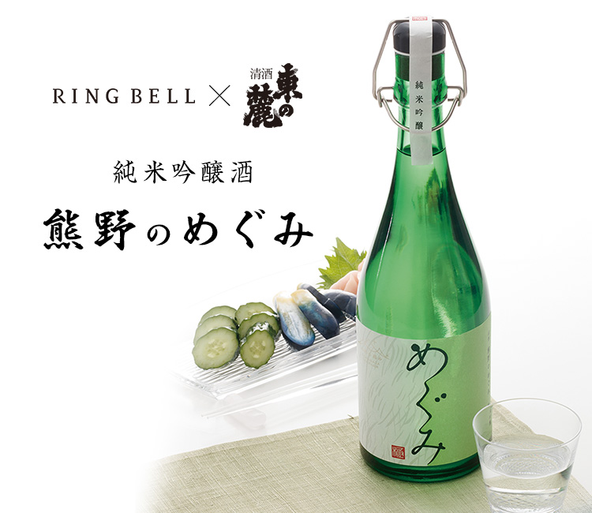
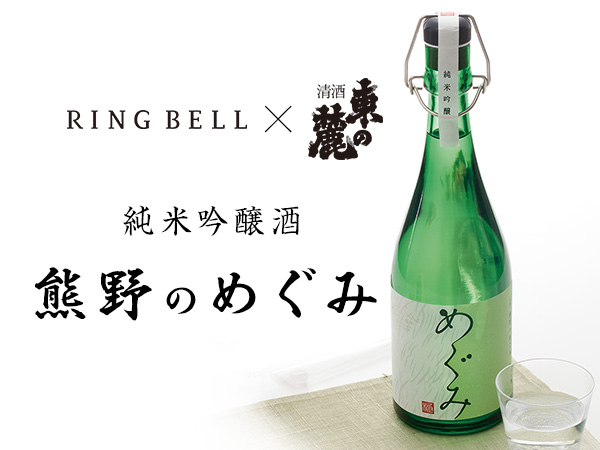
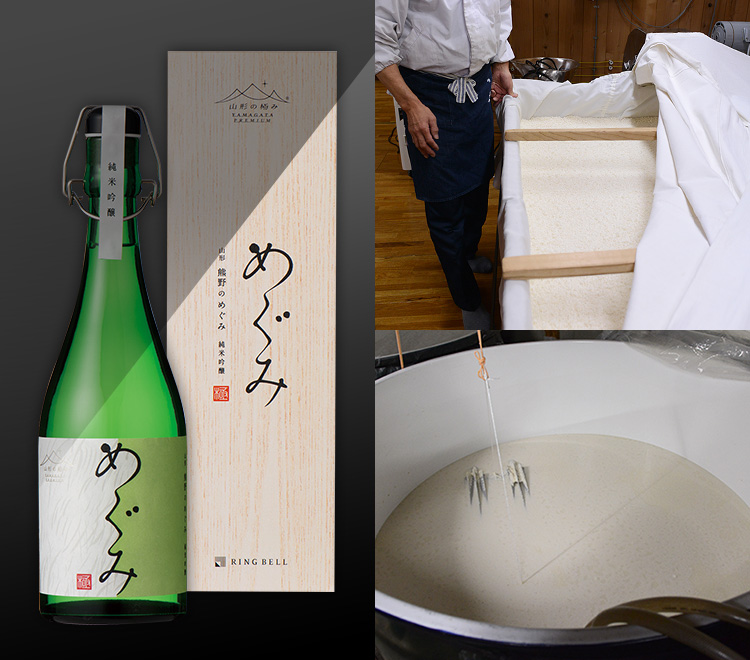
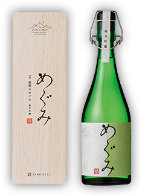

リンベルが日本一と認めた「極みの味」
山形生まれのフルーティな香りの純米吟醸酒



- IWC2018 SAKE部門
大会推奨酒認定 -
このたびインターナショナルワインチャレンジ（IWC）2018の「SAKE（日本酒）部門」において、純米吟醸の部で「純米吟醸酒 熊野のめぐみ」が「Commended 大会推奨酒」の認定を受けました。
IWCとは、イギリス・ロンドンで毎年4月に開催される世界最大規模のワイン品評会で、2007年からは日本酒部門が設けられ今回で12回目となります。
2018年度は9つのカテゴリーの計1,639銘柄がエントリーし、審査員によるブラインド・テイスティングが行われ、厳正かつ公平な審査の結果、純米吟醸の部で大会推奨酒として選出されています。
- 小さな仕込み量でていねいに造った、フルーティな純米吟醸酒
-
明治29年創業の東の麓酒造は、山形県の置賜盆地に立地しています。吾妻連峰を望み、澄んだ大気、厳しい冬の寒さ、そして清らかで豊かな水と、酒造りに最も適した地であります。豊かな大地では稲作も盛んな地であり、上良質の酒造米を多く生産し、古くから銘醸地として知られております。創業以来、伝統を守りながら新しい技術へも挑戦し、たゆまざる酒造技術を重ねてまいりました。
この東の麓酒造とリンベルがともに生み出した「熊野のめぐみ」は、山形県産の酒造好適米「美山錦」を使用し55％まで精米し、小さな仕込み量で、じっくり低温発酵させたていねいな造りをしています。甘酸っぱく、青リンゴやイチゴを想わせるフルーティな香りの純米吟醸酒です。アルコール度数17％の原酒をビン詰めしておりますので、冷やしてロックや炭酸水で割ったり、日本酒カクテルとしてもお楽しみいただけます。 甘めのお酒が好きな女性でも楽しめる日本酒となっております。
パッケージデザインは、東北芸術工科大学の中山ダイスケ氏が手掛けています。※美山錦
長野をはじめ、秋田、山形、岩手など東北地方で広く栽培されている酒米です。醸した酒は、スッキリと軽快な味わいとなります。山田錦ほど心白は大きくはないですが、北アルプス山頂の雪のような心白があることから美山錦と命名されています。
- 飲んで実感！ 私たちも大満足
-
すっきりと飲みやすさがありつつも、何度か飲み進めると重厚感も口に残るお酒でした。
日本酒は普段は飲まないのですが、これは日本酒も楽しめるなという思いにさせてくれます。
木箱に入り、ボトルも緑色がさわやかで、贈りものにもピッタリだと思います。30代 男性
とろりとした舌ざわりを感じる澄んだ味わい。
口当たりやのど越しもよいですが、お米のうま味を感じるしっかりとした重みもあるのでどんな料理との相性もよさそうです。50代 男性
料理研究家やグルメライターも絶賛！
「美食のスペシャリスト」の方々からも
お褒めの言葉をいただいています！
ご注文はこちら
-


果実感のある味わいは
まるでシャルドネのよう
グルメライター 猫田しげるさん
詳しくはこちら